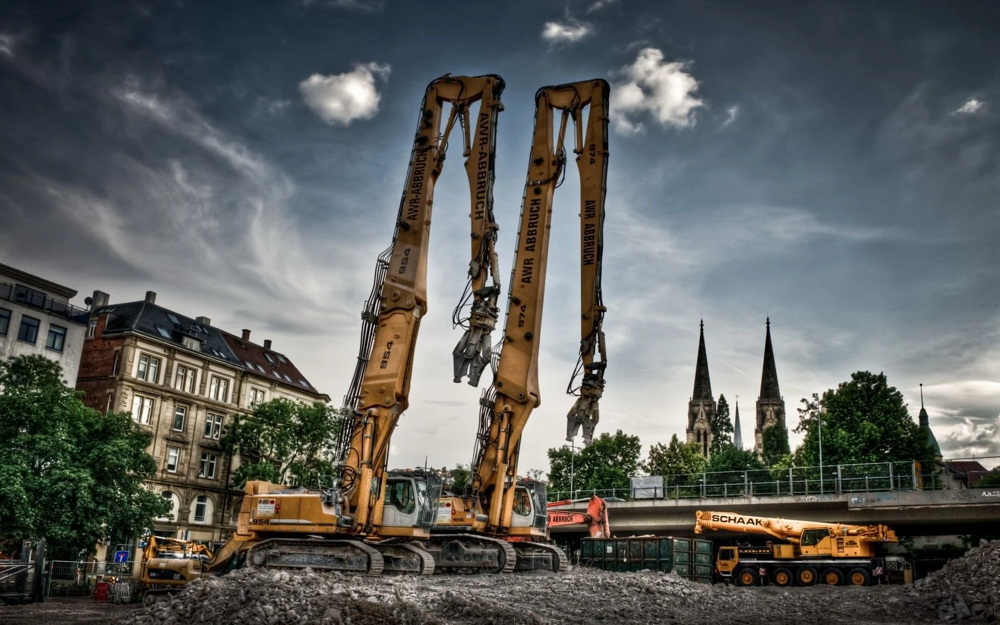

OUR RECENT PROJECT

Betoni vetënivelues
Kompania jonë mund të bëjë vetë-nivelimin e preferencave tuaja

Epoksi
Epoksitë janë më rezistent ndaj nxehtësisë dhe kimikateve se shumica e ngjitësve dhe mund të ngjiten në dru, metal, qelq, gur dhe disa plastikë.

Rivendosja e betonit
Restaurimi i betonit është thjesht procesi i riparimit të betonit të vjetër dhe të dëmtuar.